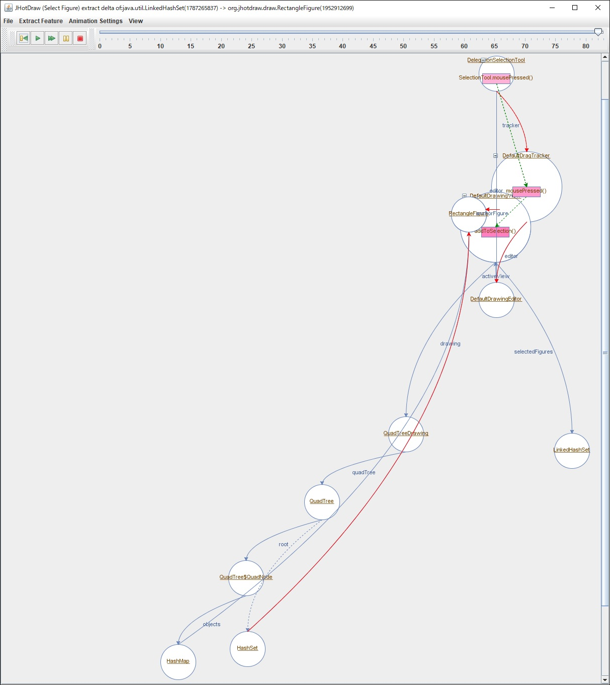
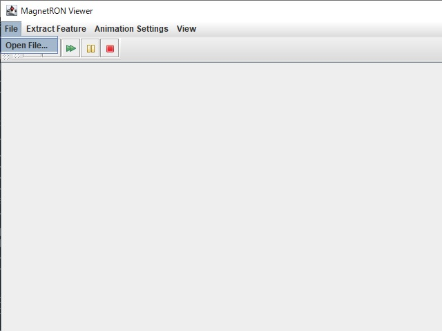
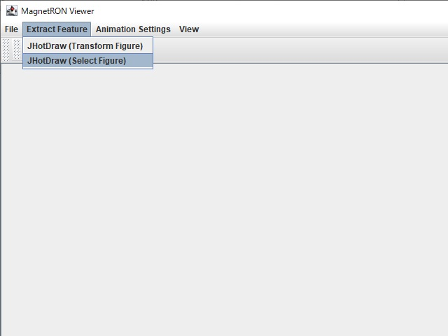
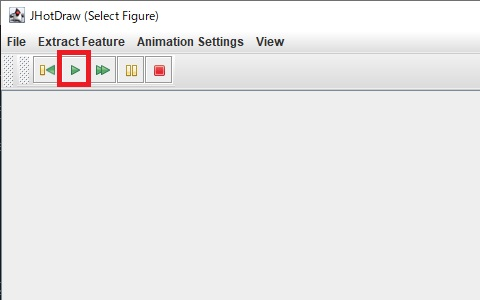

Supplemental Material
Here is the supplemental material for article "MagnetRON: Dynamic Visualization to Combine Reverse-Engineered Sequence and Object Diagrams"
MagnetRON Viewer
Video explaining how to operate the MagnetRON Viewer is here.

MagnetRON Viewer, that is a tool to show and control the magnet model is here.
It can work with Java 13 or later.
The visualization tool can be used in the following steps:
- Launch the visualization tool from the command prompt.
java -jar MagnetRONViewer.jar
- Open a MagnetRON file. (File -> Open)
It may take some time to read the MagnetRON file.
- Zipped MagnetRON and trace files are here.

- Select the feature from the Extract Feature menu. (e.g., If you open JHotDraw.magnet, Extract Feature -> JHotDraw (Select Figure) )
When the reading of the file is completed, the Extract Feature menu can be operated.

- Press the play button to play the animation. Animations can also be paused, resumed, fast-forwarded, rewinded and terminated.
After the feature extraction is completed, the animation can be played.

The Source Code of Each Subject Program
We conducted an experiment to evaluate alternation complexity and the effects of the visualization by MagnetRON using the source code of each subject program.
Artificial Programs
Real-world Programs
Extended Object Call Diagram
We conducted the experiment to evaluate the effects of the visualization by MagnetRON compared to the visualization by extended object call diagram.
The Visualization of Artificial Programs by Extended Object Call Diagram
The Visualization of Real-world Subjects by Extended Object Call Diagram
Extended Sequence Diagram
The Visualization of Artificial Programs by Extended Sequence Diagram
The Visualization of Real-world Subjects by Extended Sequence Diagram
Experimental Results
The excel file of experimental results is here.